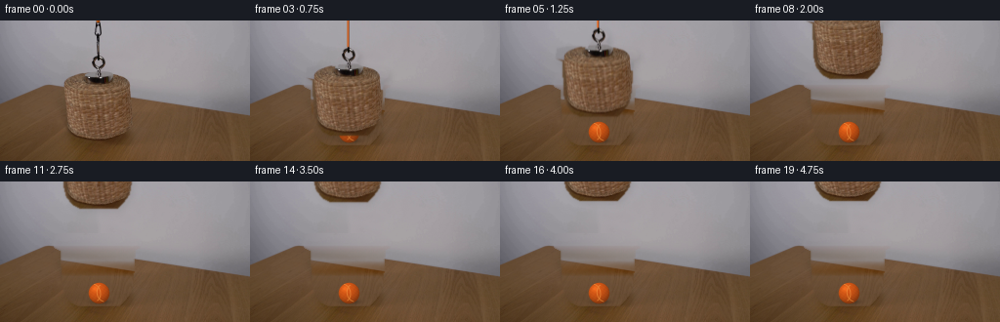
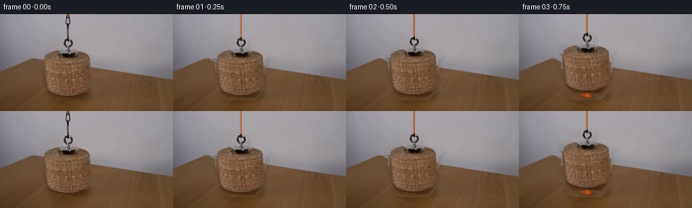

CODING AGENTS AS PIXEL WORLD MODELS
traex/GPT-5.6-Sol · 0171
点击播放 · 原生 RGB 像素
逐轮保存的候选
回放视频、检查图与代码变化。
每份候选均可单独播放。实际图片检查记录在下方工具轨迹中。
候选 01播放与检查图
点击播放 · 原生 RGB 像素


展开代码变化
--- 上一保存版本
+++ 本次保存版本
@@ -0,0 +1,173 @@
+from pathlib import Path
+import numpy as np
+import cv2
+from PIL import Image
+import artifact_io
+
+# Analytic 2-D reconstruction/animation of the photographed setup.
+HERE = Path(__file__).resolve().parent
+src = np.asarray(Image.open(HERE / "first_frame.png").convert("RGB"), dtype=np.uint8)
+H, W = src.shape[:2]
+assert (H, W) == (144, 256)
+
+
+def polygon_mask(points, blur=0.75):
+ m = np.zeros((H, W), np.float32)
+ cv2.fillPoly(m, [np.asarray(points, np.int32)], 1.0, lineType=cv2.LINE_AA)
+ if blur:
+ m = cv2.GaussianBlur(m, (0, 0), blur)
+ return np.clip(m, 0, 1)
+
+# The first image contains the basket in its starting position. These mattes
+# follow its photographed silhouette, rather than replacing it with a drawing.
+basket = polygon_mask([
+ (58, 56), (69, 54), (82, 54), (89, 56), (111, 54), (121, 56),
+ (136, 57), (142, 61), (141, 65), (136, 68), (134, 99),
+ (132, 111), (126, 119), (120, 125), (81, 125), (74, 121),
+ (68, 114), (65, 102), (64, 69), (57, 65)
+], .65)
+magnet = polygon_mask([
+ (96, 35), (102, 35), (104, 38), (108, 38), (111, 43),
+ (108, 49), (112, 54), (110, 58), (91, 58), (90, 54),
+ (94, 49), (93, 43)
+], .55)
+object_alpha = np.maximum(basket, magnet)
+
+# Make a clean plate. The wall is naturally handled by inpainting. For the
+# broad table patch, fit the existing illumination and borrow only high-
+# frequency wood grain from an adjacent part of the same input image.
+remove = (object_alpha > .02).astype(np.uint8) * 255
+# Also erase the old vertical cord.
+cv2.line(remove, (100, 0), (100, 38), 255, 7)
+remove = cv2.dilate(remove, np.ones((3, 3), np.uint8), iterations=1)
+plate = cv2.inpaint(src, remove, 5.0, cv2.INPAINT_TELEA).astype(np.float32)
+
+original_f = src.astype(np.float32)
+low = cv2.GaussianBlur(original_f, (0, 0), 4.0)
+residual = original_f - low
+xx = np.arange(W, dtype=np.float32)
+central_hard = (remove > 0)
+for y in range(53, 130):
+ # Regions to either side of the demonstration provide a stable estimate
+ # of the table's broad left-to-right lighting gradient.
+ use = ((xx < 53) | (xx > 148))
+ xfit = xx[use]
+ for c in range(3):
+ coef = np.polyfit((xfit - 128.0) / 128.0, original_f[y, use, c], 2)
+ base = np.polyval(coef, (xx - 128.0) / 128.0)
+ for x in range(54, 148):
+ if central_hard[y, x]:
+ donor_x = min(W - 1, x + 83)
+ plate[y, x, c] = base[x] + .70 * residual[y, donor_x, c]
+
+# Blend a few pixels at the repaired boundary; all pixels elsewhere remain the
+# exact locked-off source photograph.
+repair_a = cv2.GaussianBlur((remove > 0).astype(np.float32), (0, 0), 1.1)[..., None]
+plate = original_f * (1.0 - repair_a) + plate * repair_a
+plate = np.clip(plate, 0, 255)
+
+
+def draw_ball(image):
+ """Add the stationary orange tennis ball revealed by the lifting basket."""
+ out = image.copy().astype(np.float32)
+ yy, xxg = np.mgrid[0:H, 0:W].astype(np.float32)
+ cx, cy, radius = 101.0, 114.0, 10.6
+
+ # Soft contact shadow on the wooden tabletop.
+ sh = np.exp(-(((xxg - 103.0) / 14.0) ** 2 + ((yy - 123.0) / 3.4) ** 2) * 2.0)
+ sh *= (yy > 118)
+ out *= (1.0 - 0.28 * sh[..., None])
+
+ dx, dy = xxg - cx, yy - cy
+ rr = np.sqrt(dx * dx + dy * dy)
+ alpha = np.clip(radius + .65 - rr, 0, 1)
+ # Upper-left key light, spherical falloff, and warm bounce from the table.
+ nz = np.sqrt(np.clip(1.0 - (rr / radius) ** 2, 0, 1))
+ nx, ny = dx / radius, dy / radius
+ light = np.clip(.64 * nz - .30 * nx - .44 * ny, -.25, 1.0)
+ shade = .70 + .40 * light
+ base = np.zeros_like(out)
+ base[..., 0] = 214 * shade
+ base[..., 1] = 88 * shade
+ base[..., 2] = 22 * shade
+ # deterministic, very fine tennis-ball fuzz
+ fuzz = (np.sin(xxg * 4.73 + yy * 2.17) + np.sin(xxg * 1.37 - yy * 5.11)) * 2.0
+ base += fuzz[..., None] * np.array([1.0, .62, .25], np.float32)
+ # small diffuse highlight
+ hi = np.exp(-(((xxg - 97.0) / 3.0) ** 2 + ((yy - 109.5) / 2.8) ** 2))
+ base += hi[..., None] * np.array([25, 20, 10], np.float32)
+ out = out * (1 - alpha[..., None]) + base * alpha[..., None]
+
+ # Tennis-ball curved seam, anti-aliased at 4x then softly composited.
+ S = 4
+ seam = np.zeros((H * S, W * S), np.uint8)
+ cv2.ellipse(seam, (int((cx - 5.2) * S), int(cy * S)),
+ (int(7.2 * S), int(9.0 * S)), -12, -72, 72, 220,
+ max(2, int(.58 * S)), cv2.LINE_AA)
+ cv2.ellipse(seam, (int((cx + 5.3) * S), int(cy * S)),
+ (int(7.0 * S), int(9.0 * S)), -12, 108, 252, 220,
+ max(2, int(.58 * S)), cv2.LINE_AA)
+ seam = cv2.resize(seam, (W, H), interpolation=cv2.INTER_AREA).astype(np.float32) / 255.0
+ seam *= (rr < radius - .3)
+ seam_col = np.array([242., 151., 65.], np.float32)
+ out = out * (1 - seam[..., None] * .72) + seam_col * seam[..., None] * .72
+ return np.clip(out, 0, 255)
+
+ball_plate = draw_ball(plate)
+
+# Ease-in/ease-out displacement. It begins fully covering the ball and ends
+# with only the bottom of the basket visible at the top edge.
+def displacement(frame_index):
+ if frame_index <= 1:
+ return 0.0 if frame_index == 0 else -0.9
+ t = np.clip((frame_index - 1.0) / 12.0, 0.0, 1.0)
+ smooth = t * t * (3.0 - 2.0 * t)
+ # a tiny physically plausible settling at the hoist's upper stop
+ d = -106.0 * smooth
+ if frame_index >= 14:
+ d = -106.0 + [1.2, .45, 0.0, .2, 0.0, 0.0][min(frame_index - 14, 5)]
+ return d
+
+object_pm = original_f * object_alpha[..., None]
+frames = []
+for i in range(20):
+ if i == 0:
+ # Contractually pixel-identical first frame.
+ frames.append(src.copy())
+ continue
+ dy_move = displacement(i)
+ M = np.float32([[1, 0, 0], [0, 1, dy_move]])
+ a = cv2.warpAffine(object_alpha, M, (W, H), flags=cv2.INTER_LINEAR,
+ borderMode=cv2.BORDER_CONSTANT, borderValue=0)
+ pm = cv2.warpAffine(object_pm, M, (W, H), flags=cv2.INTER_LINEAR,
+ borderMode=cv2.BORDER_CONSTANT, borderValue=0)
+
+ canvas = ball_plate.copy()
+ # Diffuse cast shadow, weakening as the basket rises away from the table.
+ shadow = cv2.warpAffine(object_alpha, np.float32([[1, 0, 3], [0, 1, dy_move + 3]]),
+ (W, H), flags=cv2.INTER_LINEAR,
+ borderMode=cv2.BORDER_CONSTANT, borderValue=0)
+ shadow = cv2.GaussianBlur(shadow, (0, 0), 3.2)
+ strength = .10 - .035 * min(abs(dy_move) / 106.0, 1.0)
+ canvas *= (1.0 - strength * shadow[..., None])
+
+ # The taut orange cord shortens into the top edge as the magnet rises.
+ cord_bottom = int(round(37 + dy_move))
+ if cord_bottom > 0:
+ cord_layer = np.zeros((H * 4, W * 4, 4), np.uint8)
+ xb = int(round((100.0 + .18 * np.sin(i * .7)) * 4))
+ cv2.line(cord_layer, (xb, 0), (xb, cord_bottom * 4),
+ (205, 78, 17, 255), 7, cv2.LINE_AA)
+ cv2.line(cord_layer, (xb - 2, 0), (xb - 2, cord_bottom * 4),
+ (245, 125, 41, 145), 2, cv2.LINE_AA)
+ cord_layer = cv2.resize(cord_layer, (W, H), interpolation=cv2.INTER_AREA)
+ ca = cord_layer[..., 3:4].astype(np.float32) / 255.0
+ canvas = canvas * (1 - ca) + cord_layer[..., :3].astype(np.float32) * ca
+
+ canvas = canvas * (1.0 - a[..., None]) + pm
+ frames.append(np.clip(np.rint(canvas), 0, 255).astype(np.uint8))
+
+frames = np.stack(frames, axis=0)
+assert frames.shape == (20, 144, 256, 3) and frames.dtype == np.uint8
+assert np.array_equal(frames[0], src)
+artifact_io.save(frames, HERE)
可观测工具轨迹
实际执行的命令与返回图片。
命令 1exit 0
/bin/bash -lc "cat GENERATION_RULES.md && printf '\\n---PROMPT---\\n' && cat prompt.txt"
命令 2exit 127
/bin/bash -lc "find . -maxdepth 2 -type f -printf '%p %s bytes\\n' | sort && file first_frame.png"
命令 3exit 0
/bin/bash -lc "python3 - <<'PY'
from PIL import Image
import numpy as np
im=np.array(Image.open('first_frame.png').convert('RGB'))
print(im.shape,im.dtype,im.min(),im.max())
# stats rows/cols avg
for y in range(0,144,12): print('row',y, np.mean(im[y],0).round(1), 'lum',np.mean(im[y]))
print('cols')
for x in range(0,256,16): print(x,np.mean(im[:,x],0).round(1),np.mean(im[:,x]))
# orange candidates r>1.25g and r>1.8b or hue-ish
R,G,B=im.transpose(2,0,1)
m=(R>130)&(R>G*1.15)&(G>B*1.2)&((R.astype(int)-B)>50)
ys,xs=np.where(m)
print('orange bbox/count',xs.min(),ys.min(),xs.max(),ys.max(),len(xs))
# counts by rows/cols top
for axis,nm in [(0,'x'),(1,'y')]:
a=m.sum(axis=axis); inds=np.argsort(a)[-30:]
print(nm, sorted([(int(i),int(a[i])) for i in inds if a[i]>0],key=lambda z:z[0]))
# darkest bbox significant
for threshold in (30,50,70,90,110,130):
mm=np.mean(im,2)<threshold; yy,xx=np.where(mm)
print('dark',threshold,len(xx), (xx.min(),yy.min(),xx.max(),yy.max()) if len(xx) else None)
PY"命令 4exit 0
/bin/bash -lc "python3 - <<'PY'
from PIL import Image
import numpy as np
im=np.array(Image.open('first_frame.png').convert('RGB').resize((64,36)))
# kmeans quick
from scipy.cluster.vq import kmeans2
x=im.reshape(-1,3).astype(float)
c,l=kmeans2(x,12,minit='++',seed=3)
print('centers')
for i,v in enumerate(c): print(i,np.round(v).astype(int),np.sum(l==i))
l=l.reshape(36,64)
chars='0123456789AB'
for row in l: print(''.join(chars[i] for i in row))
PY"命令 5exit 0
/bin/bash -lc "python3 - <<'PY'
import cv2, numpy as np
im=cv2.imread('first_frame.png'); rgb=im[:,:,::-1]
g=cv2.cvtColor(im,cv2.COLOR_BGR2GRAY)
# canny contours
ed=cv2.Canny(g,40,100)
co,_=cv2.findContours(ed,cv2.RETR_LIST,cv2.CHAIN_APPROX_SIMPLE)
for c in sorted(co,key=cv2.contourArea,reverse=True)[:30]:
x,y,w,h=cv2.boundingRect(c); print(round(cv2.contourArea(c),1),(x,y,w,h))
# sample every 4 points object central rgb / lum coded as characters by brightness anomaly against right-side estimated bg same row
# median bg x150:240 per row. difference euclid
bg=np.median(rgb[:,150:240],axis=1)
d=np.linalg.norm(rgb-bg[:,None],axis=2)
for sy in range(0,144,4):
s=''
for sx in range(0,150,4):
z=d[sy:sy+4,sx:sx+4].mean()
s += ' ' if z<5 else '.' if z<12 else '+' if z<25 else 'o' if z<45 else 'O' if z<70 else '#'
print(f'{sy:03}',s)
PY"命令 6exit 0
/bin/bash -lc "python3 - <<'PY'
import cv2,numpy as np
im=cv2.imread('first_frame.png'); hsv=cv2.cvtColor(im,cv2.COLOR_BGR2HSV)
# components masks various hue/sat/val
for name,lo,hi in [('orange',(5,80,80),(30,255,255)),('brown',(0,50,30),(30,255,180)),('sat',(0,60,0),(179,255,255)),('dark',(0,0,0),(179,255,70))]:
m=cv2.inRange(hsv,np.array(lo),np.array(hi)); n,lab,st,cent=cv2.connectedComponentsWithStats(m)
print('\\n',name,'count',m.sum()//255)
for i in np.argsort(st[1:,4])[-15:][::-1]+1:
x,y,w,h,a=st[i];
if a>=3: print(a,(x,y,w,h),np.round(cent[i],1))
# precise print HSV/RGB crop averaged 2x2 from x55:140 y45:130, map categories hue char
for y in range(44,132,4):
s=''
for x in range(52,144,4):
p=hsv[y:y+4,x:x+4].mean((0,1)); H,S,V=p
if V<40:c='#'
elif V<65:c='D'
elif S<15:c='.'
elif S<30:c='g'
elif S<50:c='G'
elif H<10 or H>170:c='r'
elif H<25:c='O'
elif H<40:c='y'
else:c='x'
s+=c
print(f'{y:03} {s}')
PY"命令 7exit 0
/bin/bash -lc "python3 - <<'PY'
from PIL import Image
import numpy as np
im=np.array(Image.open('first_frame.png').convert('RGB'))
g=np.mean(im,2)
for y in range(0,130,2):
vals=[]
for x in range(50,145,2):
q=g[y:y+2,x:x+2].mean()
# char brightness fixed
vals.append('@' if q<35 else '#' if q<50 else 'D' if q<65 else 'o' if q<80 else '+' if q<100 else ':' if q<120 else '.' if q<140 else ' ')
print(f'{y:03}', ''.join(vals))
print('rgb key grid mean 4x4 central y50')
for y in range(48,128,4):
print(y, ['%03d/%03d/%03d'%tuple(np.mean(im[y:y+4,x:x+4],(0,1)).astype(int)) for x in range(60,140,4)])
PY"命令 8exit 0
/bin/bash -lc "python3 - <<'PY'
import cv2,numpy as np
im=cv2.imread('first_frame.png')
g=cv2.cvtColor(im,cv2.COLOR_BGR2GRAY)
for p2 in (12,16,20,25):
c=cv2.HoughCircles(g,cv2.HOUGH_GRADIENT,dp=1,minDist=10,param1=80,param2=p2,minRadius=3,maxRadius=25)
print(p2, None if c is None else np.round(c[0],1))
# Row edge gradient sums/ x edge sums
Gy=np.abs(cv2.Sobel(g,cv2.CV_32F,0,1));Gx=np.abs(cv2.Sobel(g,cv2.CV_32F,1,0))
print('gy',sorted(enumerate(Gy.mean(1)),key=lambda x:x[1],reverse=True)[:20])
print('gx',sorted(enumerate(Gx.mean(0)),key=lambda x:x[1],reverse=True)[:20])
PY"命令 9exit 0
/bin/bash -lc "python3 - <<'PY'
from PIL import Image
import numpy as np
im=np.array(Image.open('first_frame.png').convert('RGB'))
for y in range(0,58,4):
print('y',y,[(x,tuple(im[y,x])) for x in range(94,108)])
PY"命令 10exit 0
/bin/bash -lc "sed -n '1,240p' artifact_io.py"
命令 11exit 0
/bin/bash -lc "cat > generate.py <<'PY'
from pathlib import Path
import numpy as np
import cv2
from PIL import Image
import artifact_io
# Analytic 2-D reconstruction/animation of the photographed setup.
HERE = Path(__file__).resolve().parent
src = np.asarray(Image.open(HERE / \"first_frame.png\").convert(\"RGB\"), dtype=np.uint8)
H, W = src.shape[:2]
assert (H, W) == (144, 256)
def polygon_mask(points, blur=0.75):
m = np.zeros((H, W), np.float32)
cv2.fillPoly(m, [np.asarray(points, np.int32)], 1.0, lineType=cv2.LINE_AA)
if blur:
m = cv2.GaussianBlur(m, (0, 0), blur)
return np.clip(m, 0, 1)
# The first image contains the basket in its starting position. These mattes
# follow its photographed silhouette, rather than replacing it with a drawing.
basket = polygon_mask([
(58, 56), (69, 54), (82, 54), (89, 56), (111, 54), (121, 56),
(136, 57), (142, 61), (141, 65), (136, 68), (134, 99),
(132, 111), (126, 119), (120, 125), (81, 125), (74, 121),
(68, 114), (65, 102), (64, 69), (57, 65)
], .65)
magnet = polygon_mask([
(96, 35), (102, 35), (104, 38), (108, 38), (111, 43),
(108, 49), (112, 54), (110, 58), (91, 58), (90, 54),
(94, 49), (93, 43)
], .55)
object_alpha = np.maximum(basket, magnet)
# Make a clean plate. The wall is naturally handled by inpainting. For the
# broad table patch, fit the existing illumination and borrow only high-
# frequency wood grain from an adjacent part of the same input image.
remove = (object_alpha > .02).astype(np.uint8) * 255
# Also erase the old vertical cord.
cv2.line(remove, (100, 0), (100, 38), 255, 7)
remove = cv2.dilate(remove, np.ones((3, 3), np.uint8), iterations=1)
plate = cv2.inpaint(src, remove, 5.0, cv2.INPAINT_TELEA).astype(np.float32)
original_f = src.astype(np.float32)
low = cv2.GaussianBlur(original_f, (0, 0), 4.0)
residual = original_f - low
xx = np.arange(W, dtype=np.float32)
central_hard = (remove > 0)
for y in range(53, 130):
# Regions to either side of the demonstration provide a stable estimate
# of the table's broad left-to-right lighting gradient.
use = ((xx < 53) | (xx > 148))
xfit = xx[use]
for c in range(3):
coef = np.polyfit((xfit - 128.0) / 128.0, original_f[y, use, c], 2)
base = np.polyval(coef, (xx - 128.0) / 128.0)
for x in range(54, 148):
if central_hard[y, x]:
donor_x = min(W - 1, x + 83)
plate[y, x, c] = base[x] + .70 * residual[y, donor_x, c]
# Blend a few pixels at the repaired boundary; all pixels elsewhere remain the
# exact locked-off source photograph.
repair_a = cv2.GaussianBlur((remove > 0).astype(np.float32), (0, 0), 1.1)[..., None]
plate = original_f * (1.0 - repair_a) + plate * repair_a
plate = np.clip(plate, 0, 255)
def draw_ball(image):
\"\"\"Add the stationary orange tennis ball revealed by the lifting basket.\"\"\"
out = image.copy().astype(np.float32)
yy, xxg = np.mgrid[0:H, 0:W].astype(np.float32)
cx, cy, radius = 101.0, 114.0, 10.6
# Soft contact shadow on the wooden tabletop.
sh = np.exp(-(((xxg - 103.0) / 14.0) ** 2 + ((yy - 123.0) / 3.4) ** 2) * 2.0)
sh *= (yy > 118)
out *= (1.0 - 0.28 * sh[..., None])
dx, dy = xxg - cx, yy - cy
rr = np.sqrt(dx * dx + dy * dy)
alpha = np.clip(radius + .65 - rr, 0, 1)
# Upper-left key light, spherical falloff, and warm bounce from the table.
nz = np.sqrt(np.clip(1.0 - (rr / radius) ** 2, 0, 1))
nx, ny = dx / radius, dy / radius
light = np.clip(.64 * nz - .30 * nx - .44 * ny, -.25, 1.0)
shade = .70 + .40 * light
base = np.zeros_like(out)
base[..., 0] = 214 * shade
base[..., 1] = 88 * shade
base[..., 2] = 22 * shade
# deterministic, very fine tennis-ball fuzz
fuzz = (np.sin(xxg * 4.73 + yy * 2.17) + np.sin(xxg * 1.37 - yy * 5.11)) * 2.0
base += fuzz[..., None] * np.array([1.0, .62, .25], np.float32)
# small diffuse highlight
hi = np.exp(-(((xxg - 97.0) / 3.0) ** 2 + ((yy - 109.5) / 2.8) ** 2))
base += hi[..., None] * np.array([25, 20, 10], np.float32)
out = out * (1 - alpha[..., None]) + base * alpha[..., None]
# Tennis-ball curved seam, anti-aliased at 4x then softly composited.
S = 4
seam = np.zeros((H * S, W * S), np.uint8)
cv2.ellipse(seam, (int((cx - 5.2) * S), int(cy * S)),
(int(7.2 * S), int(9.0 * S)), -12, -72, 72, 220,
max(2, int(.58 * S)), cv2.LINE_AA)
cv2.ellipse(seam, (int((cx + 5.3) * S), int(cy * S)),
(int(7.0 * S), int(9.0 * S)), -12, 108, 252, 220,
max(2, int(.58 * S)), cv2.LINE_AA)
seam = cv2.resize(seam, (W, H), interpolation=cv2.INTER_AREA).astype(np.float32) / 255.0
seam *= (rr < radius - .3)
seam_col = np.array([242., 151., 65.], np.float32)
out = out * (1 - seam[..., None] * .72) + seam_col * seam[..., None] * .72
return np.clip(out, 0, 255)
ball_plate = draw_ball(plate)
# Ease-in/ease-out displacement. It begins fully covering the ball and ends
# with only the bottom of the basket visible at the top edge.
def displacement(frame_index):
if frame_index <= 1:
return 0.0 if frame_index == 0 else -0.9
t = np.clip((frame_index - 1.0) / 12.0, 0.0, 1.0)
smooth = t * t * (3.0 - 2.0 * t)
# a tiny physically plausible settling at the hoist's upper stop
d = -106.0 * smooth
if frame_index >= 14:
d = -106.0 + [1.2, .45, 0.0, .2, 0.0, 0.0][min(frame_index - 14, 5)]
return d
object_pm = original_f * object_alpha[..., None]
frames = []
for i in range(20):
if i == 0:
# Contractually pixel-identical first frame.
frames.append(src.copy())
continue
dy_move = displacement(i)
M = np.float32([[1, 0, 0], [0, 1, dy_move]])
a = cv2.warpAffine(object_alpha, M, (W, H), flags=cv2.INTER_LINEAR,
borderMode=cv2.BORDER_CONSTANT, borderValue=0)
pm = cv2.warpAffine(object_pm, M, (W, H), flags=cv2.INTER_LINEAR,
borderMode=cv2.BORDER_CONSTANT, borderValue=0)
canvas = ball_plate.copy()
# Diffuse cast shadow, weakening as the basket rises away from the table.
shadow = cv2.warpAffine(object_alpha, np.float32([[1, 0, 3], [0, 1, dy_move + 3]]),
(W, H), flags=cv2.INTER_LINEAR,
borderMode=cv2.BORDER_CONSTANT, borderValue=0)
shadow = cv2.GaussianBlur(shadow, (0, 0), 3.2)
strength = .10 - .035 * min(abs(dy_move) / 106.0, 1.0)
canvas *= (1.0 - strength * shadow[..., None])
# The taut orange cord shortens into the top edge as the magnet rises.
cord_bottom = int(round(37 + dy_move))
if cord_bottom > 0:
cord_layer = np.zeros((H * 4, W * 4, 4), np.uint8)
xb = int(round((100.0 + .18 * np.sin(i * .7)) * 4))
cv2.line(cord_layer, (xb, 0), (xb, cord_bottom * 4),
(205, 78, 17, 255), 7, cv2.LINE_AA)
cv2.line(cord_layer, (xb - 2, 0), (xb - 2, cord_bottom * 4),
(245, 125, 41, 145), 2, cv2.LINE_AA)
cord_layer = cv2.resize(cord_layer, (W, H), interpolation=cv2.INTER_AREA)
ca = cord_layer[..., 3:4].astype(np.float32) / 255.0
canvas = canvas * (1 - ca) + cord_layer[..., :3].astype(np.float32) * ca
canvas = canvas * (1.0 - a[..., None]) + pm
frames.append(np.clip(np.rint(canvas), 0, 255).astype(np.uint8))
frames = np.stack(frames, axis=0)
assert frames.shape == (20, 144, 256, 3) and frames.dtype == np.uint8
assert np.array_equal(frames[0], src)
artifact_io.save(frames, HERE)
PY
python3 generate.py
python3 - <<'PY'
from PIL import Image
import numpy as np
x=np.load('pixels.npz')['pixels']
print('pixels',x.shape,x.dtype)
print('frame0 exact',np.array_equal(np.array(Image.open('frames/00.png')),np.array(Image.open('first_frame.png'))))
for i in range(20):
a=np.array(Image.open(f'frames/{i:02d}.png'))
if i: print(i, 'changed',np.count_nonzero(np.any(a"'!=prev,2)), '"'mean',a.mean().round(2))
prev=a
PY"保存候选 1 份；完成命令 11 次；可验证图片返回 0 张。原始 API 响应与完整日志保留在本地。